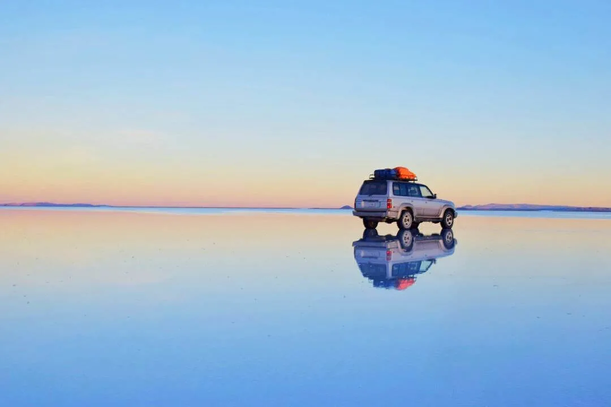
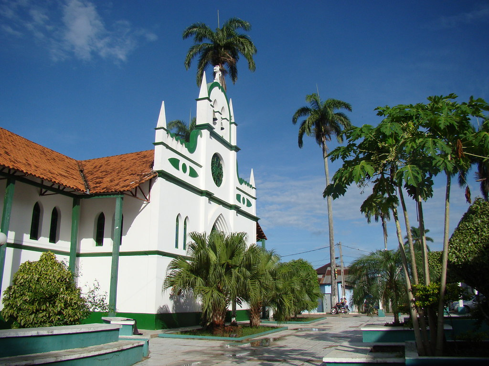
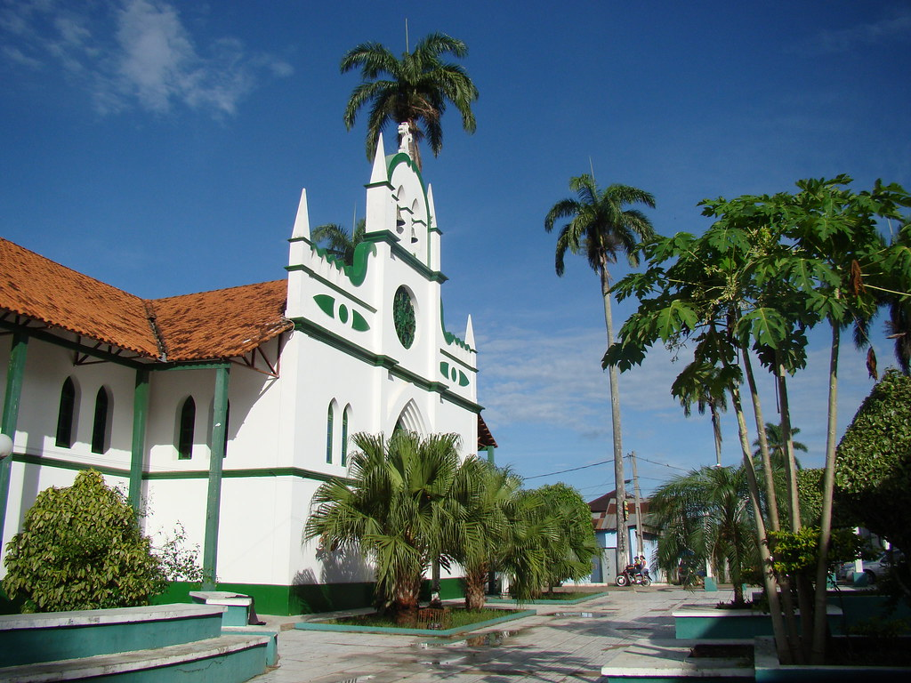
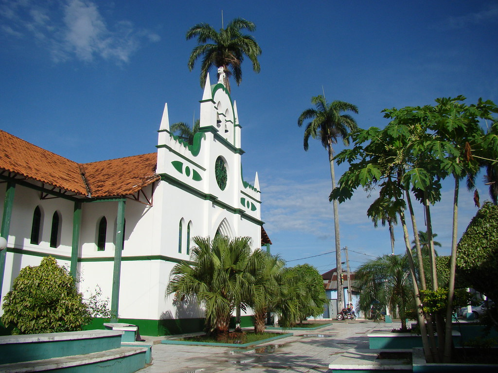

 




En 2025 celebramos 200 años de historia, cultura y diversidad. Vive la magia de un país lleno de paisajes
únicos como el Salar de Uyuni, el Lago Titicaca y nuestras ciudades coloniales. Déjate sorprender por la
calidez de su gente, su rica gastronomía y aventuras que recordarás toda la vida.
Bolivia te espera...
¡Ven y sé parte de esta gran celebración!